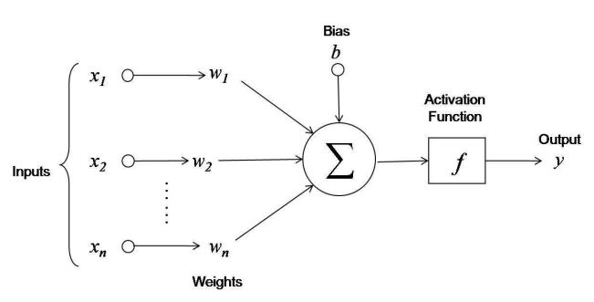

Notes on Machine Learning - Playing Uno
I was playing Uno with my daughter last weekend and wondering about the best strategies. I had also been looking into TensorFlow and, while the ideas and maths is relatively easy, a lack of practical knowledge about machine learning in general was making the reading difficult. So, as so often happens, two became one and I set about using Uno to learn about machine learning using TDD along the way.
A previous blog entry talks about the TDD journey in creating an executable Uno model in Java. This post talks about the machine learning part.
Better Players
How can we apply machine learning to our Uno model? It seems natural that the logic should go into the Player class. That class currently just chooses a random card from amongst the playable cards (see the previous post). We could code some specialised logic into the Player class and test the outcome. That’s not much fun for a simple game like Uno, the plan is to learn the winning strategy, but it’s a good way to get started. First of all let’s create a test harness for benchmarking our results. We already have a Game class which represents an entire game of Uno. One game is not enough to test the effectiveness of a Player so we extend the concept and create a Tournament class. This class executes a given number of games and extracts some statistical data from the results. Just to test the class we run 10 iterations of 200 games, 2000 games in total, with two of our random players.
Player[] players = { new RandomPlayer(), new RandomPlayer() };
Tournament tournament = new Tournament();
Stats stats = tournament.play(players, 2000);The result is:
RandomPlayer 1 51(1)
RandomPlayer 2 49(1)RandomPlayer 1 won 51% of its games on average with a standard error in the mean estimate of about 1. Likewise, RandomPlayer 2 won 49% of the games. We see that the two players play at the same level, as expected.
Let’s try something else. What about if the player plays offensively by always playing the lowest scoring card in their hand, keeping wild cards for the end? Overriding the appropriate method in Player we have:
public class OffensivePlayer extends Player {
protected Card chooseCard(List playableCards) {
Card min = null;
for (Card next : playableCards) {
if (min == null || min.points() > next.points()) {
min = next;
}
}
return min;
}
}How does that do compared to the random player? Let’s see:
Player[] players = new Player[] { new OffensivePlayer(), new RandomPlayer() };
Tournament tournament = new Tournament();
Stats stats = tournament.play(players, 4000);Resulting in:
RandomPlayer 2 58(1)
OffensivePlayer 1 42(1)The new strategy won 42% of it’s games on average while the random player won 58%. Not a good strategy it would seem. What about the opposite: a defensive player? The code is very similar to the OffensivePlayer except that it chooses the highest scoring card from the hand. The result:
DefensivePlayer 1 75(1)
RandomPlayer 2 25(1)Wow! The defensive strategy knocks the socks off a random player. What happens if we pitch them against each other?
DefensivePlayer 1 78(1)
OffensivePlayer 2 22(1)Defensive play seems to be the winning strategy. Let’s play all three against each other to see what happens.
DefensivePlayer 1 40(1)
RandomPlayer 3 32(1)
OffensivePlayer 2 28(1)Defensive play still wins but not by such a margin this time. What happens when we add more random players?
OffensivePlayer 0 27(1)
RandomPlayer 3 25(1)
RandomPlayer 2 24(1)
DefensivePlayer 1 23(1)Curious. The defensive player is not so smug now! In fact it’s below the offensive one. It’s even below the random card players. It’s interesting to see that under some conditions neither the defensive nor the offensive strategy is objectively better. This is backed up by the Uno wiki page which says:
A strategy at Uno may be offensive (aiming to go out), or defensive (aiming to minimize the value of one’s hand, in the event that another player goes out, thus getting those points). Part of the skill of playing Uno is knowing when to adopt an offensive or defensive strategy.
Adding more random players to the game changes the dynamics again.
OffensivePlayer 0 22(1)
DefensivePlayer 1 19(1)
RandomPlayer 2 19(1)
RandomPlayer 3 20(1)
RandomPlayer 4 20(1)It seems that the offensive player is more likely to win against random players. Here we have evidence that the offensive strategy works against random (i.e. “bad”) players whereas the defensive strategy works against “good” players.
Offensive play is the best player we have found so far for most cases but maybe there are better strategies. We could have continued to improve the player logic in code. For example, playing action cards first but wild cards last seems to be one of the better options. However that was not the objective. I wanted to make it more intelligent - artificially intelligent…
Step up the Perceptron
The Single Layer Perceptron is the simplest kind of neural net assigning a matrix of weights to a list of inputs to produce a list of outputs. Take the simplest formula:
\[\textbf{z} = \textbf{w} \cdot \textbf{x} + \textbf{b}\]
Where z is the output list (as a vector of doubles) and x is the input list, also a vector. The input list is also known as a feature vector because it represents the features or characteristics of some thing to be classified by the perceptron. The parameters w (another vector) and b (a scalar) control the weighting factors and bias (offsets from 0) of the perceptron model respectively. It looks like this:

In our case x is a vector representing a potential card to be played and the output vector will have one element which gives us a number indicating the strength of that card. Using this model we’ll play the card with the highest strength. It should be possible to model both the offensive and defensive strategies with suitable choices of the parameters.
The first, and most pressing question is: how do we know what values to use for the parameters w and b? That’s a good question. The perceptron can be trained using known answers and back-propagation. Since we don’t have any training data we’re going to take a different route and use a genetic optimisation algorithm to learn the best parameters.
The genetic algorithm is a simulation of the process of natural selection and uses survival of the fittest, mutation and sexual reproduction to continuously improve the parameters (genes) of a population. In our simplest case the player that wins most games will be selected as the “parent” of the next generation. Random fluctuations in the parameter values are introduced (mutations) and the losing players parameters are “crossed” with the winner to produce a new generation.
The input vector is a list with 0s in every position except the one indicating the card to be evaluated, where the value is 1 (the so-called 1-hot encoding). Our output vectors is only one element making the bias pointless so we’ll set it to 0. These choices make our calculation of z very easy and efficient.
private double evaluateCard(Card card) {
double output = w[card.index()];
return output;
}Playing a tournament with a Perceptron player with all parameters initially set to 0 against a random player gives us the expected output, their results are virtually identical.
PerceptronPlayer 0 50(1)
RandomPlayer 1 50(1)Survival of the fittest
We are ready to introduce our genetic algorithm. The mutation looks like this:
public void mutate() {
for (int i = 0; i < pack.size(); i++) {
if (random.nextDouble() < 0.1) {
w[i] += mutation();
}
}
}
private double mutation() {
return 0.1 * random();
}The method random() returns a random number between -1 and +1. The two arbitrary mutation factors (0.1) affect the rate of mutation and the magnitude of mutation1. At the moment we don’t know what the optimal values of these numbers are so we’ll have to adjust them using trial and error (and intuition, for now). Actually the magnitude of the mutation should be arbitrary given that it applies equally to all weights. The rate of mutation however could affect the rate of convergence so we may need to tune it in the future.
1 These numbers are called hyperparameters.
We can also teach it how to have sex, copying the parameters from a range of values:
public void copyFrom(PerceptronPlayer otherPlayer) {
int x1 = random.nextInt(pack.size());
int x2 = random.nextInt(pack.size());
for (int i = Math.min(x1, x2); i < Math.max(x1, x2); i++) {
w[i] = otherPlayer.w[i];
}
}We run numerous tournaments generating a new generation of parameters every time as outlined above. After 200 iterations our Perceptron has learned how to beat a random card player, on average.
PerceptronPlayer 0 27(4)
PerceptronPlayer 1 26(2)
PerceptronPlayer 2 25(2)
RandomPlayer 3 20(2)Let’s try some more challenging training rounds: we put 3 Perceptrons up against one of each of the other players. The training starts like this:
OffensivePlayer 4 22(1)
PerceptronPlayer 0 17(1)
PerceptronPlayer 2 17(2)
PerceptronPlayer 1 16(2)
RandomPlayer 5 14(1)
DefensivePlayer 3 12(1)Pretty much what we might expect. The defensive player does exceeding badly against many other players. The offensive player is winning with the Perceptron and random card players in the middle, averaging about the same.
But after 500 training rounds (perceptron generations) the perceptrons are routinely beating all the other players:
PerceptronPlayer 0 21(1)
PerceptronPlayer 1 19(2)
PerceptronPlayer 2 17(0)
OffensivePlayer 4 16(1)
RandomPlayer 5 15(2)
DefensivePlayer 3 9(2)Lets run a tournament of 2000 games with this new player:
PerceptronPlayer 1 32(2)
OffensivePlayer 8 26(1)
RandomPlayer 6 22(1)
DefensivePlayer 7 20(1)Ladies and gentlemen we have a new champion. This is a linear Perceptron with a simple list of weights assigned to each card. Can we do better?
What about a non-linear perceptron?
Well first we’ll complete the single layer perceptron by applying a non-linear activation function to the evaluation. This is the evaluation formula:
\[\textbf{z} = \sigma(\textbf{w} \cdot \textbf{x} + \textbf{b})\]
Where σ is a nonlinear function normally taken to be a step function, sigmoid or tanh. Basically my understanding is that this exaggerates small variations close to 0 and attenuates large values away from 0 making the overall function more effective in generating interesting results. Note that this non-linearity function makes the bias vector meaningful again so that gets the mutation treatment too.
if (random.nextDouble() < 0.1) {
b += mutation();
}We’ll choose the Heaviside step function as our our non-linear activation function because it’s easy and efficient to calculate. The mathematical advantages of the sigmoid and tanh functions are of little use to us here anyway since we’re not doing backpropagation. By the way, don’t let anyone tell you that the step function is linear, it’s not. It does have straight bits but that does not in any way make it linear. Anyway it’s easy to implement:
double h = w[card.index()] + b;
if (h > 0)
output += h;Once again we set off a training session and after 500 iterations this is the result.
OffensivePlayer 8 31(2)
PerceptronPlayer 2 26(1)
RandomPlayer 6 23(1)
DefensivePlayer 7 20(1)Not a very big improvement on the random card player. Maybe the training wasn’t long enough. It took a while so let’s see if we can optimise it a bit more first.
Better features
I took out some logging to speed things up but it was also concerning me that we had 108+1 degrees of freedom in the model, one for the weight applied to each of the cards in the pack and one for the b parameter. We have some redundancy in the model because there are very often 2 or even 4 copies of the same card. I eliminated that redundancy with a hash lookup table reducing the number of degrees of freedom to 53+1 (this is called Feature hashing).
Initialise the starting weight and bias to 0, we run 2000 training steps and get:
PerceptronPlayer 0 31(2)
OffensivePlayer 8 25(1)
RandomPlayer 6 23(2)
DefensivePlayer 7 21(1)That’s better. Now let’s complicate things still further. Multi-layer Perceptrons have at least one hidden vector of intermediate values which are then mapped a second time to the output. To convert from our input vector to the hidden vector the weight vector becomes a weight matrix but the maths stays very similar. Our evaluation function now has to sum over all the hidden vector intermediate results:
private double evaluateCard(Card card) {
int i = featureVector.indexOf(card);
double output = 0;
for (int j = 0; j < HIDDEN_LAYER_SIZE; j++) {
double h = w[i][j] + b[j];
if (h > 0)
output += h;
}
return output;
}We can see the step function is still there but this time included within a loop over the hidden layer. Once again the calculation is simplified immensely by the choice of input vector (all 0s with a single 1 at position i). At first I tried a hidden vector of 10 values. This increases the number of parameters again which is worrying for training purposes, anyway we plough on and train the network in exactly the same way a before. Mutation and parameter crossing is employed, this time over the whole 2D matrix of parameters. With some trepidation I launch a training session and then run a tournament. Here are the results with a graph for good measure.
PerceptronPlayer 3 31(1)
OffensivePlayer 1 25(1)
DefensivePlayer 0 22(1)
RandomPlayer 2 22(1)
Well we haven’t made it worse, but we haven’t made it a whole lot better either. It may or may not be worth tuning the new perceptron but time is running out.
Let’s quickly give it a better opponent. We could improve the offensive player’s strategy still more by getting rid of the highest non-wild cards first. In this way we’ll still hold on to wild cards for the end of the round. These are the results of adding that type of player to a 10,000 game tournament with all the other usual suspects:
PerceptronPlayer 0 22(1)
BetterOffensivePlayer 9 21(2)
OffensivePlayer 8 20(2)
RandomPlayer 6 18(2)
DefensivePlayer 7 17(1)Our thoughtful play has indeed improved upon the previous incarnation but the Perceptron is still in there. In fact the Perceptron should be able to simulate and even improve all of our strategies. For example it would learn the best strategy for Draw Two cards. (Don’t tell anyone but actually the variances shown here render these results nearly useless. We could run longer tournaments but time has run out.) What we can say is that the simple genetic algorithm has indeed learned to play Uno quite well.
What next?
There’s so much more to explore. For example, one thing our (Multi-Layered) Perceptron cannot do is remember the sequence of cards that have been played before which may have an effect of the best game play. For that we need state memory or an RNN, learning from every winning game by backpropagation, for example. Also we could add more information to the feature vectors, how many cards each player has would potentially be a useful thing to know.
That’s for another day. For now I need to get back and do some proper work!